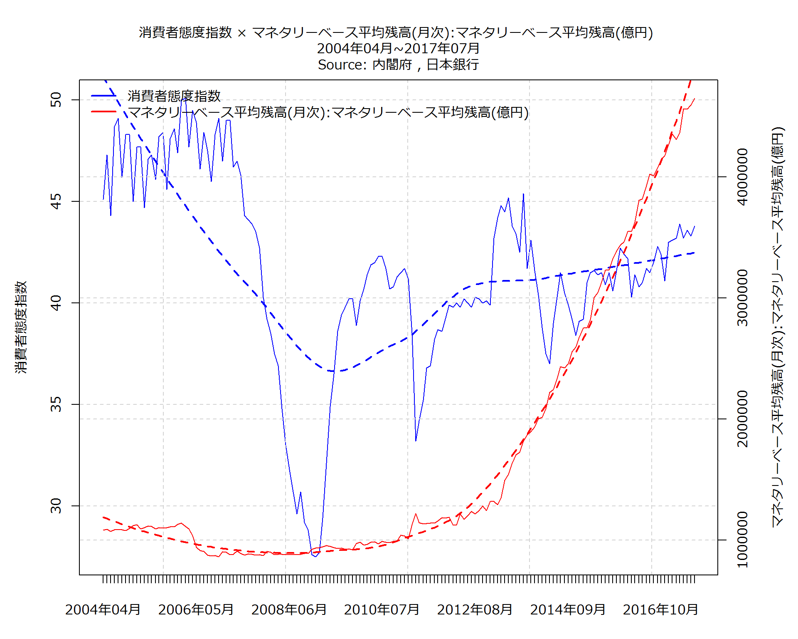

| Item | 2017年03月 | 2017年04月 | 2017年05月 | 2017年06月 | 2017年07月 |
|---|---|---|---|---|---|
| 消費者態度指数 | 43.9 | 43.2 | 43.6 | 43.3 | 43.8 |
| 消費者態度指数を構成する消費者意識指標-暮らし向き | 42.7 | 41.5 | 42.2 | 41.1 | 42.3 |
| 消費者態度指数を構成する消費者意識指標-収入の増え方 | 42.2 | 41.4 | 42 | 41.6 | 41.7 |
| 消費者態度指数を構成する消費者意識指標-雇用環境 | 46.9 | 47.7 | 47.8 | 48.1 | 48.1 |
| 消費者態度指数を構成する消費者意識指標-耐久消費財の買い時判断 | 43.8 | 42.2 | 42.2 | 42.2 | 43.2 |
| その他の消費者意識指標-資産価値 | 42.8 | 41.1 | 42.6 | 42.3 | 44.1 |
| Item | 2017年03月 | 2017年04月 | 2017年05月 | 2017年06月 | 2017年07月 |
|---|---|---|---|---|---|
| 消費者態度指数 | 0.7 | -0.7 | 0.4 | -0.3 | 0.5 |
| 消費者態度指数を構成する消費者意識指標-暮らし向き | 0.9 | -1.2 | 0.7 | -1.1 | 1.2 |
| 消費者態度指数を構成する消費者意識指標-収入の増え方 | 0.7 | -0.8 | 0.6 | -0.4 | 0.1 |
| 消費者態度指数を構成する消費者意識指標-雇用環境 | 0.7 | 0.8 | 0.1 | 0.3 | 0 |
| 消費者態度指数を構成する消費者意識指標-耐久消費財の買い時判断 | 0.7 | -1.6 | 0 | 0 | 1 |
| その他の消費者意識指標-資産価値 | 0.4 | -1.7 | 1.5 | -0.3 | 1.8 |
